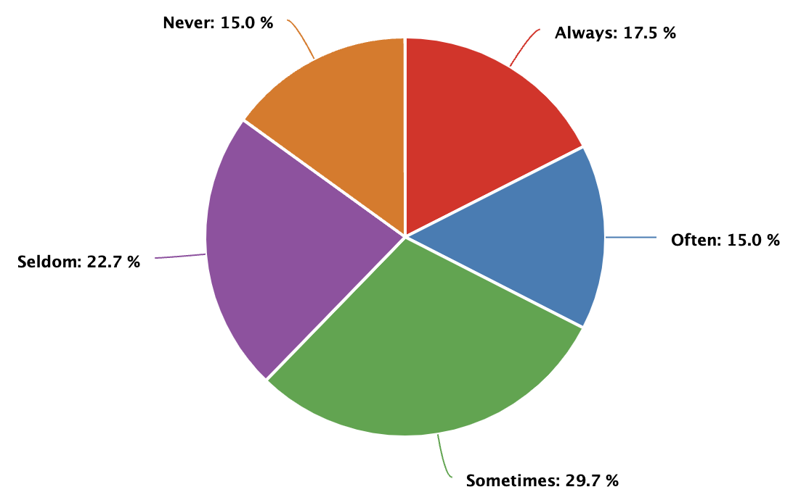

Contrast Success Criteria

| Response | % of respondents |
|---|---|
| Always | 16.8% |
| Often | 14.4% |
| Sometimes | 28.4% |
| Seldom | 21.6% |
| Never | 14.4% |
If you're unsure of what these WCAG success criteria are about, you can learn more by following the links in the list below:
Or you can review the content in the Deque University course Visual Design and Colors or contact your instructor if you have questions.